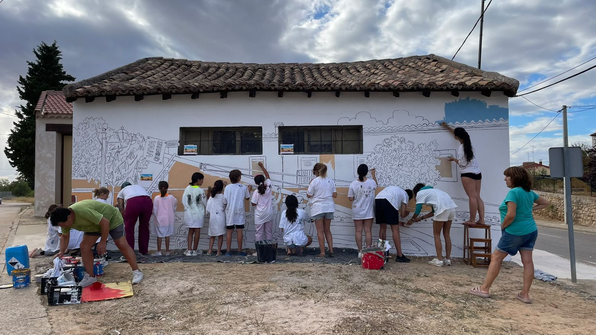
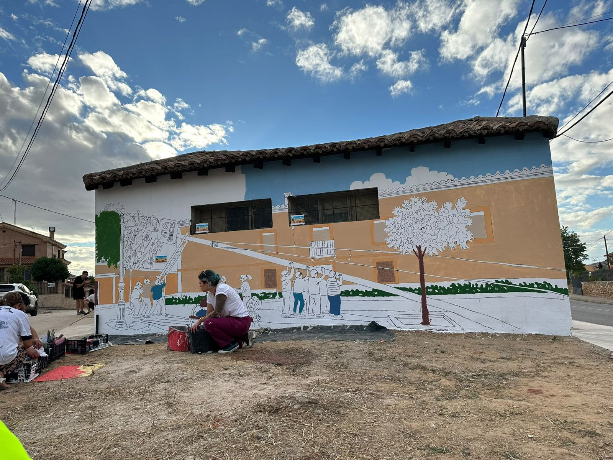
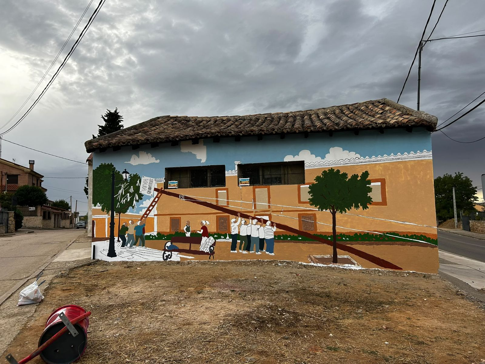

Este mural rinde homenaje a la tradición de la puesta del mayo en nuestro pueblo.
En la parte central se puede observar el árbol siendo levantado: un grupo de vecinos lo empuja con las manos en alto, otros tiran desde la escalera, y sobre la plaza cuelga una pancarta que dice «Viva Quintos».
🎧 Escucha la narración (1 min)
Cinco días pintando
Entre vecinos y vecinas, niños y adultos, el mural se pintó en cinco días junto a un estudio de Burgos especializado en murales colaborativos. Aquí tienes cómo fue.
Vídeo del proceso del mural
Del dibujo al color
Primero se dibujó el contorno sobre la pared blanca. Después, entre todos, fue entrando el color: el cielo, la fachada, los árboles y, por último, las personas.



Mira bien el mural
- El mayo. El tronco cruza la pared en diagonal, sujeto con cuerdas, mientras lo levantan entre muchos.
- Viva Quintos. La pancarta saluda a los quintos, protagonistas de la puesta del mayo.
- El árbol con cintas. A la izquierda, junto a la farola, un árbol lleno de cintas de colores.
- La plaza. Un banco, dos vecinos charlando, las flores y las casas de siempre, con sus ventanas.
- Las ventanas del mural. Los dos recuadros reales de la pared tienen pegadas pequeñas pinturas de paisaje.
Más de una docena de manos pintando a la vez: así se hizo el mural.
La tradición de poner el mayo
El mayo es un árbol o un tronco alto y derecho —en muchos sitios un pino o un chopo— que los jóvenes del pueblo cortan en el monte, traen hasta la plaza y levantan entre todos. Se hace en la víspera del 1 de mayo o ese mismo día, para dar la bienvenida a la primavera.
Los protagonistas son los quintos: los jóvenes que ese año cumplen la mayoría de edad. Antiguamente eran los chicos que entraban en quintas para el servicio militar; hoy la tradición se ha abierto y participan también las quintas. Levantar el mayo es, de algún modo, su entrada en la vida adulta del pueblo.
Según la costumbre de cada lugar, el mayo queda en pie en la plaza durante todo el mes. En algunos pueblos se adorna con cintas, banderas o flores, y en otros la noche del 30 de abril los mozos cantaban «los mayos» a las mozas, también como forma de cortejo. Es una fiesta muy antigua, ligada al culto al árbol, a la fertilidad y al despertar de la naturaleza.
Y en La Aguilera… pronto añadiremos aquí los recuerdos de nuestros vecinos: cómo se ponía el mayo antes y cómo se pone ahora.
La Aguilera
Pequeño pueblo de la Ribera del Duero, en Burgos, a pocos kilómetros de Aranda de Duero. Está rodeado de viñedos y bodegas excavadas en la ladera, con el cerro de La Malagueña como mirador de toda la comarca.
Su patrón es San Pedro Regalado, cuyo santuario se encuentra en el pueblo, y sus fiestas se celebran en mayo, el 13, además de las de verano. Mayo, aquí, es un mes de plaza y de vecinos.